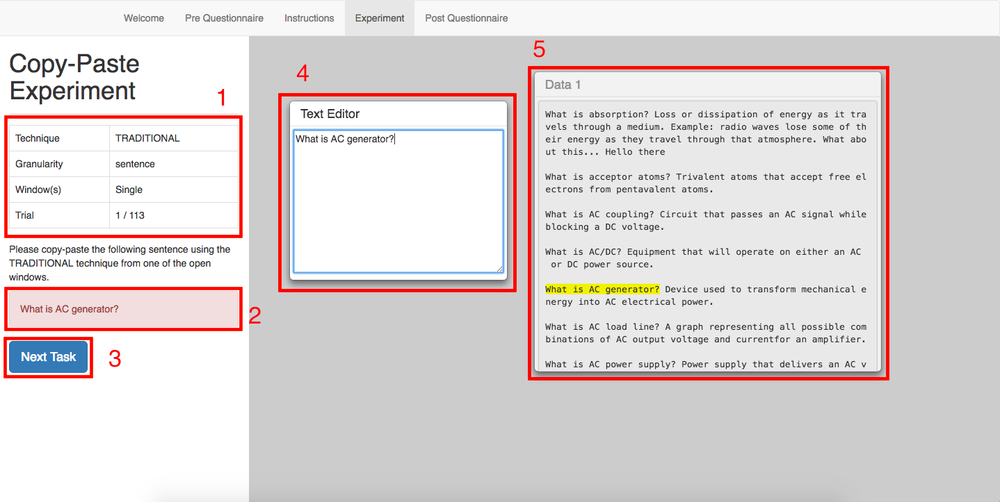
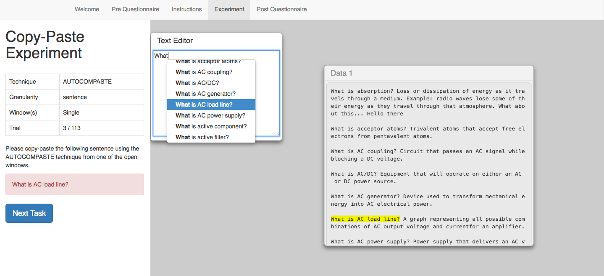
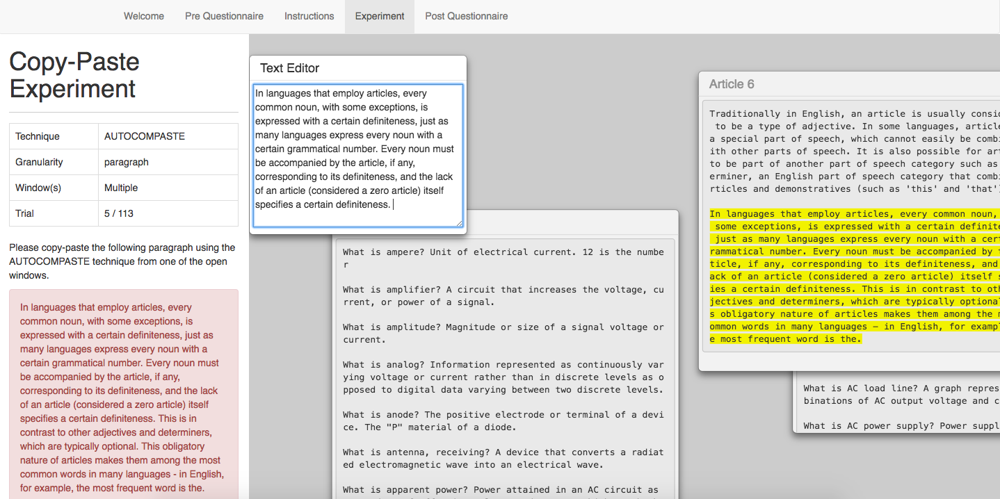
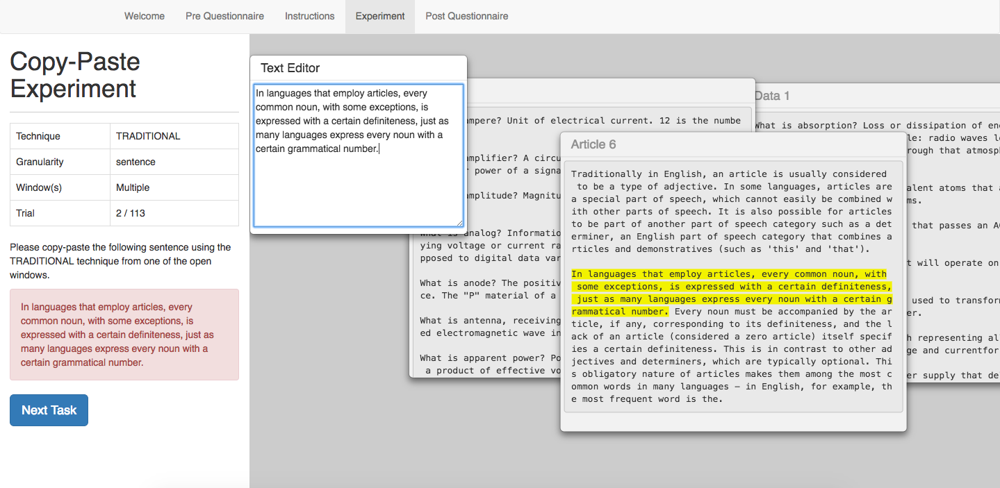
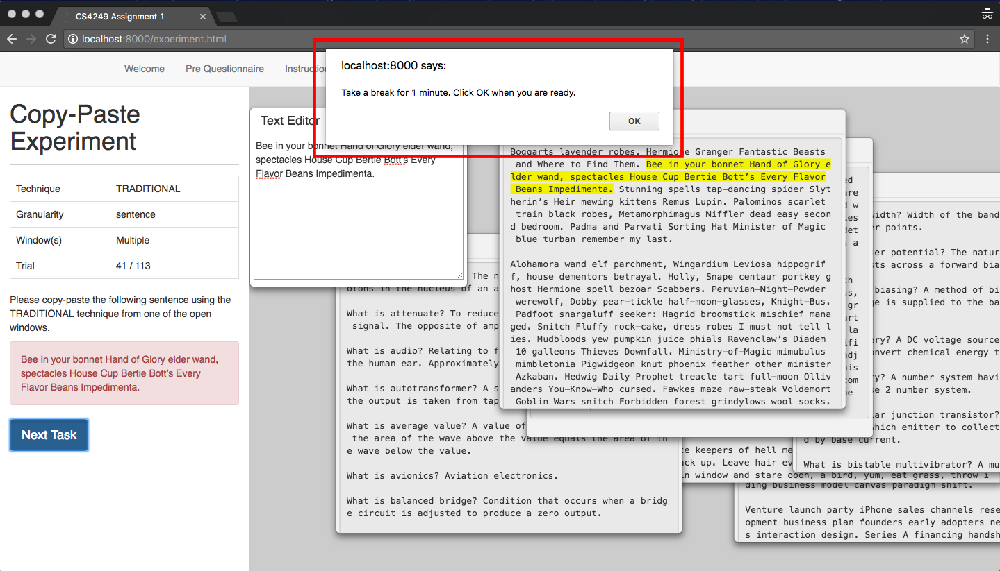

Instructions
Dear participant , please read the instructions before the experiment.
Hello,
You are here to test on two text copy-and-paste techniques which are the traditional copy-and-paste technique (ctrl-c, ctrl-v) and the newly designed AutoComPaste technique.
The interface will look like this.

The left panel consists of
- Trial details table
- Text to copy – the text you need to copy and paste
- Next task button – to move on to the next task
The right panel consists of
- Text editor – paste the text here
- Text window(s) – copy the text from here
Trial Details Table: the table will show the following details regarding the trial
- Technique you need to use to complete the task
- Granularity of text to copy – sentence, paragraph or phrase
- Single-window or multiple window setting
- Trial number
Traditional Copy-and-Paste technique:
- You need to copy the text to copy from the text window(s) – there can be one or multiple windows.
- Paste the text onto the text editor.
- Click on the next task button.
AutoComPaste technique:
- You need to type (minimum 3 characters) the text you want to copy on the text editor till you see the text you want in the selection.
- You may use the up and down arrow keys on your keyboard to scroll through the text selections when choosing.
- Press Enter (on your keyboard) to ‘paste’ the text on the editor.
- Upon pasting, you can continue the text by using the right and left arrow keys.
- Click on the next task button when you are done.


Note that there might multiple windows of text appearing on the interface. Thus, you may need to search through the windows to find the text you want to copy.

There are 3 one-minute breaks in total during the experiments. Take your time to catch some breath during the breaks.

After the experiment, please fill up the post-experiment questionnaire. If you have any clarification at any time, please let the invigilator know.
Thanks for your time!